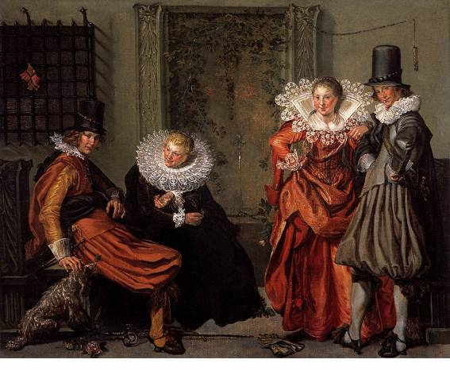
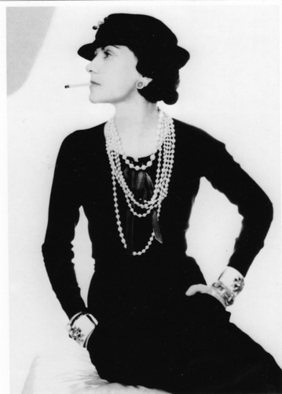

Histoire de la mode en France
Comme l'indiquent les mots « costume » et « habit », la mode a tout d'une coutume, ou d'une habitude, à ceci près qu'elle ne valorise pas la tradition, mais au contraire la nouveauté, le « moderne ». Apparu au XIXe siècle, le créateur de mode se veut un esthète, non le serviteur des codes de la bourgeoisie. De leur côté, depuis au moins les zazous, sous l'occupation allemande, les modes des adolescents s'inscrivent volontiers en rupture avec l'ordre social établi. La mode n'en a pas moins un lien indiscutable avec la société de consommation, l'industrie du vêtement, mais aussi la face éclatante de cette industrie : la constitution d'une élite de l'image par les revues de mode, la photographie, le cinéma et la télévision.
XVIIe siècle
Des règlements qui existaient depuis le XIIIe siècle déterminaient la mode : rédigés dans les communes par des magistrats et des seigneurs, ils avaient pour but de conserver les bonnes mœurs, aider la propre industrie, se protéger des influences étrangères et de luxe inutile, mais le but principal était de conserver les différences des classes.
Les femmes portaient des cols plus effilés, car le décolleté était élargi jusqu’aux épaules. Elles portaient le plus souvent des jupes en forme de cloches et des corselets avec un grand décolleté. Les manches arrivaient jusqu’aux coudes au maximum. À la maison chaque femme portait un manteau de maison. En France et en Angleterre, les femmes se protégeaient le visage avec un masque, et beaucoup plus tard avec un voile. L’Italie et l’Allemagne ne se sont pas ralliées à cette coutume. Autour du cou, les femmes aimaient bien se mettre un col en four, qui était appelé « petit four aux puces », parce qu’on pensait qu’il était destiné à attirer les insectes. Contrairement aux Italiennes, les femmes en Espagne, Allemagne, France et Angleterre ne montraient jamais leurs vrais cheveux. La minceur générale des femmes était soulignée par les corselets, qui étaient munis de ressorts d’acier d’une longueur d’un demi-mètre. À la fin du XVIIe siècle les premières « mouches » apparurent sur les visages des femmes.

Du XVIIIe au XIXe siècle
Le monde pré-industriel n'était pas indifférent à l'apparence, mais celle-ci avait pour fonction de théâtraliser la hiérarchie sociale. À l'opposé du rejet contemporain de l'uniforme, la coutume assignait à chacun son habit en même temps que son rang social. Jusqu'au XXe siècle, le vêtement de la femme change peu dans sa ligne générale, sauf lors du Directoire, mais les vêtements des courtisans frappent par leur splendeur. Le grand seigneur porte sur son dos sa richesse foncière, pour la montrer, au risque de la dilapider. L'indépendance d'esprit de l'aristocratie se manifeste à certaines époques par la mise en valeur libertine du corps.
En France, c'est au XIVe siècle que commencent à se diffuser dans le pays les usages vestimentaires de la Cour. La haute couture parisienne sera l'héritière de ce phénomène. Mais la noblesse est protégée de toute véritable immixtion par ses privilèges, y compris celui de porter talons rouges. Peu avant la Révolution française, des almanachs de mode illustrés font connaître la mode de Paris aux lectrices de province et d'Europe. Le même phénomène s'était produit un peu plus tôt en Angleterre. C'est là l'apparition de la presse de mode, ce vecteur essentiel de la libéralisation de l'habit.
Avec les sans-culottes, le vêtement prend une signification politique. Rayures et pantalons pervertissent les codes vestimentaires de l'Ancien Régime. Du côté royaliste, Muscadins à la chute de Robespierre, Incroyables et Merveilleuses sous le Directoire, préfigurent le dandysme, voire les futures tribus urbaines. Mais l'accent demeure évidemment mis sur l'appartenance à une élite aristocratique : le droit à l'excentricité est lui-même un privilège. Cependant, la loi du 8 brumaire de l'an 2 (29 octobre 1793) proclame la liberté de s'habiller comme on le souhaite, ce qui préfigure la démocratisation dans l'habillement.
1800-1950 : L'empire de l'éphémère, haute couture et confection
La mode se constitue réellement avec l'invention de la haute couture qui, tout en recrutant sa clientèle parmi les élites classiques, n'a cessé de mettre en scène sa proximité avec la nouvelle aristocratie des artistes. Le créateur de mode réussit à s'imposer comme un « artiste du luxe », selon l'expression de Lipovetsky dans L'Empire de l'éphémère.
Au XIXe siècle, Charles Frédéric Worth invente les mannequins vivants et, au début du XXe siècle, Jeanne Paquin les défilés de mode. Il existait une vingtaine de maisons de couture à Paris en 1900 (une centaine en 1946, 14 actuellement après les dernières fusions). Le grand couturier n'est plus un artisan au service de ses clients, il fait partie de leur monde, un monde plus mélangé qui se constitue sous le Second Empire et se cherche une âme en même temps qu'une légitimité. Avec le dandysme, théorisé par Baudelaire, il les trouve : la correction de l'élégance tient lieu de naissance, tant l'esthétique constitue en fait une éthique, inimitable pour celui qui n'est pas déjà un élu.
Dès les années 1830, la confection (le futur prêt-à-porter) apparaît. Elle alimente d'abord les magasins de nouveautés, puis les grands magasins. Elle sait populariser la mode, utiliser des imitations bon marché des matières nobles. Elle possède ses propres créateurs talentueux, comme Cacharel ou Jean-Paul Gaultier. Depuis la création par Yves Saint-Laurent de sa collection Rive gauche, on peut parler d'un prêt-à-porter de luxe, qui n'est pas un simple succédané de la haute couture. La haute couture, qui travaille pour un nombre très réduit de clientes, semble hésiter entre le statut d'art pur et celui d'un outil de promotion pour les accessoires de mode et les parfums.
Pour se diffuser, la mode a su faire alliance avec l'image, de l'illustration à la télévision. Coco Chanel conclut en 1930 un accord avec Samuel Goldwyn pour habiller les stars d'United Artists. À partir de 1985, les top models deviennent des vedettes médiatiques à part entière.

Années 1950-1960
Après la Seconde Guerre mondiale, la production est surtout marquée par l'émancipation du corps de la femme, préparée par Paul Poiret, puis Coco Chanel, l'invention des « jeunes » et l'industrialisation accrue. La démocratisation du vêtement va de pair avec une prolifération des mouvements de mode adolescents, inséparables des courants musicaux. Il n'est plus si facile de réduire la mode au prestige d'une élite définie, serait-ce celle du spectacle, ni au souci de distinction au sens sociologique du terme. L'anglais différencie utilement ce qui est de l'ordre de la mode bourgeoise, ou fashion, et ce qui est vécu comme subversif, ou fad.
Grâce aux médias, la caste spectaculaire, vedettes, artistes et, finalement, top models, fournit à la société des modèles de consommation. Cette bourgeoisie de l'apparence appartient toujours, en fait, à la réalité socio-économique, mais semble en être détachée. De plus, le rapport de la mode à la rue est devenue complexe. Qui imite qui ?
On peut, en effet, noter que le port de tel ou tel vêtement, de tel ou tel accessoire, devient souvent à la mode après qu'une personnalité (people, acteur, top-model, etc.) l'a porté. C'est ainsi que sont devenues à la mode de nombreuses façons de se vêtir. Par exemple :
le port du T-shirt s'est rapidement développé après que les acteurs de cinéma John Wayne, Marlon Brando et James Dean en ont porté à la télévision. Le public fut tout d'abord choqué, pour finalement l'accepter avec le temps.
Le port du bikini a pris un essor très important lorqu'en 1956, Brigitte Bardot le rendit populaire dans le film « Et Dieu… créa la femme » dans lequel elle le portait en toile vichy.
Dans les années 1960, l'uniformité était plus manifeste que la volonté de se distinguer, qui sert de grille d'interprétation aux sociologues de la mode, depuis Georg Simmel (1904). Le jeans triomphe en France à partir de 1967. Il constitue bientôt l'uniforme de la jeunesse mondiale, garçons comme filles. C'est paradoxalement là une façon de revendiquer l'individualité et la décontraction, en rejetant le vêtement « bourgeois ».
Années 2000
La compétition dans les looks semble cependant s'estomper au profit de l'éclectisme inspiré de la world music. On notera aussi le succès de la silhouette sportive à l'américaine : survêtement, T-shirt, casquette et chaussures souples, ainsi que le retour aux éléments de mode des années 1980.
Enfin, dans les années 2000, deux tendances antinomiques semblent s'imposer en parallèle : la prééminence absolue des marques d'un côté et la contestation radicale de ces dernières de l'autre.
En parallèle, on a pu observer un rejet de la mode en tant que stigmate de la consommation à outrance. À l'échelle internationale, la philosophie du "No Logo" - en référence à l'ouvrage de Naomi Klein, figurant en 2000 sur la liste du Gardian Award, puis paru en France en 2001 - vise à résister aux diktats et aux apparences consuméristes.
La mode contemporaine exprimerait à la fois une certaine attitude grégaire et le rejet de toute appartenance à une catégorie déterminée. L'adolescence est une classe qui n'en est pas une, une classe d'âge éphémère. L'élite des médias semble vivre dans un monde irréel, instable. Il en va de même pour les mannequins.
Les années 2000 semblent propices au rapprochement de la mode et l'art contemporain. La mode emprunte des références esthétiques et des thématiques développées par les artistes, et joue également un rôle de plus en plus prépondérant dans le financement de leurs œuvres, via le mécénat et les commandes d'œuvres (notamment par Bernard Arnault et François Pinault) pour les lancements de boutiques et de produits.